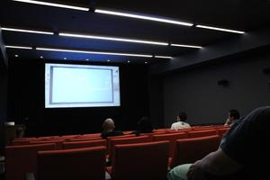
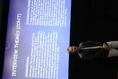
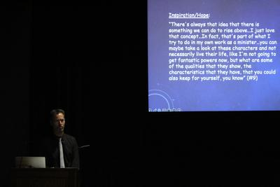
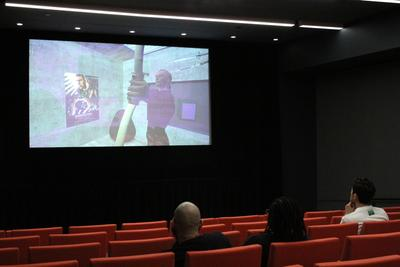

这是一场关于动漫展（Comic-Con）文化如何从亚文化走向主流的讲座座谈，探讨这一粉丝崇拜现象——它已在国际上达到临界规模。我们与陶森大学社会学教授 Michael A. Elliott 一同深入探讨粉丝在人们生活中的作用，以及人们为何成为某一流行文化类型的忠实粉丝。活动还包括两场短片放映（共 25 分钟），呈现艺术家 AA Cheng 与 Skawennati 的作品。





关于 Prof. Michael A. Elliott
Michael Elliott 教授将他的热情融入全球化课堂，在社会学与人类学领域激发学生参与。他的研究聚焦"书呆子文化"（nerd culture），检视这些社群中的强烈投入与社会动态。超越娱乐层面，他的工作探讨神圣意义如何在全球世俗语境中浮现，强调当代社会中塑造意义、目的与社会纽带（尤其在粉丝社群里）的多元体验。
关于《I See Myself a Monster》
“当心灵根植于网络世界，物理对象失去其精神价值与意义。一切——包括自己——都可以被轻易解构。我通过自我解构探索内在价值，但结果不可避免地是一只拼合的造物，如同嵌合体一般。”
— AA Cheng · 2023 · 3 分 42 秒
关于《TimeTraveller™》
TimeTraveller™ 是一个跨平台项目，包含一部九集的 machinima 系列。该系列讲述了 22 世纪年轻莫霍克人 Hunter 的赛博朋克旅程：他通过深入过去来寻求对未来的洞见。尽管拥有强大的传统战士技能，Hunter 在一个过度人口、过度消费与技术弥漫的世界中感到漂泊。出于紧迫感，他借助教育娱乐工具 TimeTraveller™ 重新连接传统，希望找到人生目标。他沉浸于与第一民族及美洲原住民相关的关键历史事件，包括达科他苏族起义（1852）、奥卡危机（1990）与恶魔岛占领（1969）。旅途中，他遇到了当代莫霍克女性 Karahkwenhawi——由于一个奇特的系统故障，她也能使用 TimeTraveller™ 眼镜。
活动日程
16:00 – 16:10开场介绍 Introduction
16:10 – 16:15放映《I See Myself a Monster》— AA Cheng
16:15 – 16:35讲座 — Prof. Michael A. Elliott
16:35 – 16:55放映《TimeTraveller™》— 艺术家 Skawennati
16:55 – 17:00问答环节 Q&A